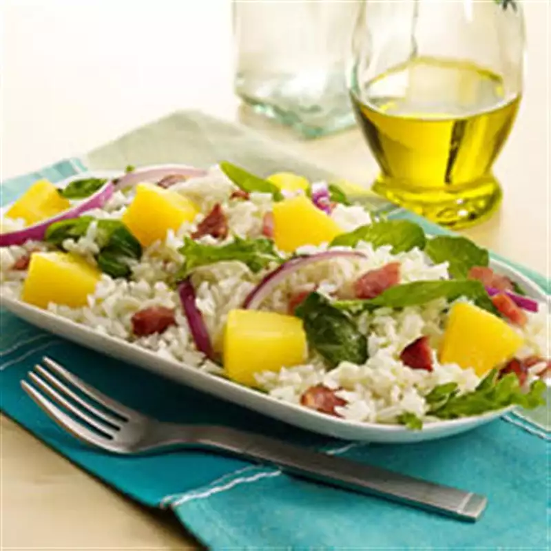

Rice Salad

Description
A salad is a dish consisting of mixed,
mostly natural ingredients with at least one raw ingredient.
They are often dressed,
and typically served at room temperature or chilled,
though some can be served war
Ingredients:
- 2 cups instant white rice, uncooked
- 1 (20 ounce) can DOLE Pineapple Chunks
- 1 ½ cups packed arugula or spinach
- ½ pound bacon slices, cooked, drained and crumbled
- ½ cup sliced red onion
- ⅓ cup olive oil
- 1 tablespoon Dijon mustard
- Salt and pepper to taste
steps:
-
Prepare rice according to package directions.
-
Drain pineapple; reserve 1/4 cup juice.
-
Combine rice, pineapple chunks, arugula,
bacon and onion in large bowl.
-
Whisk together olive oil,
reserved juice and mustard in small bowl.
Add salt and pepper to taste.
Pour over rice mixture; toss to evenly coat.
apple salad